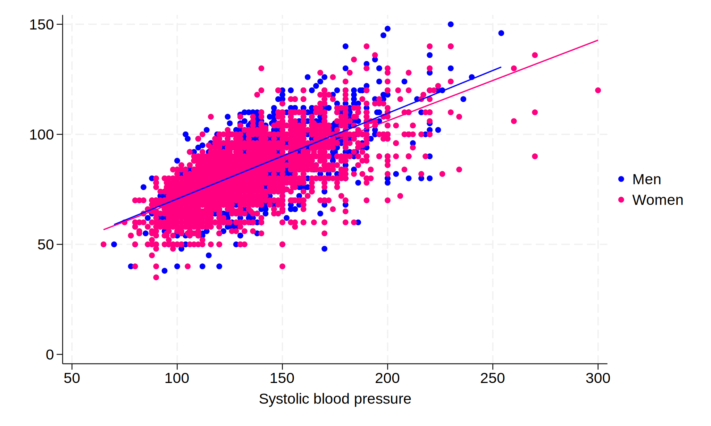
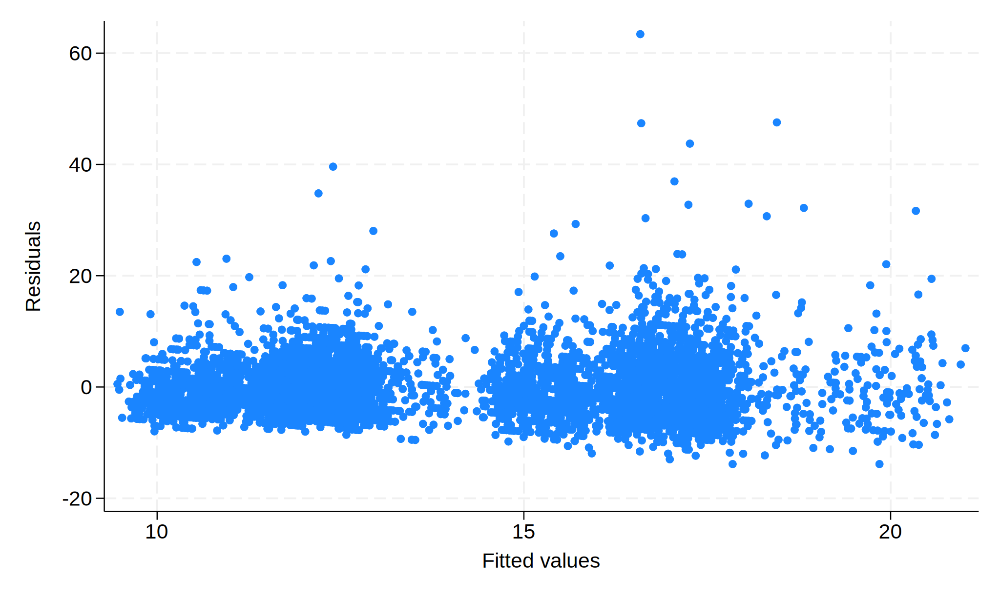
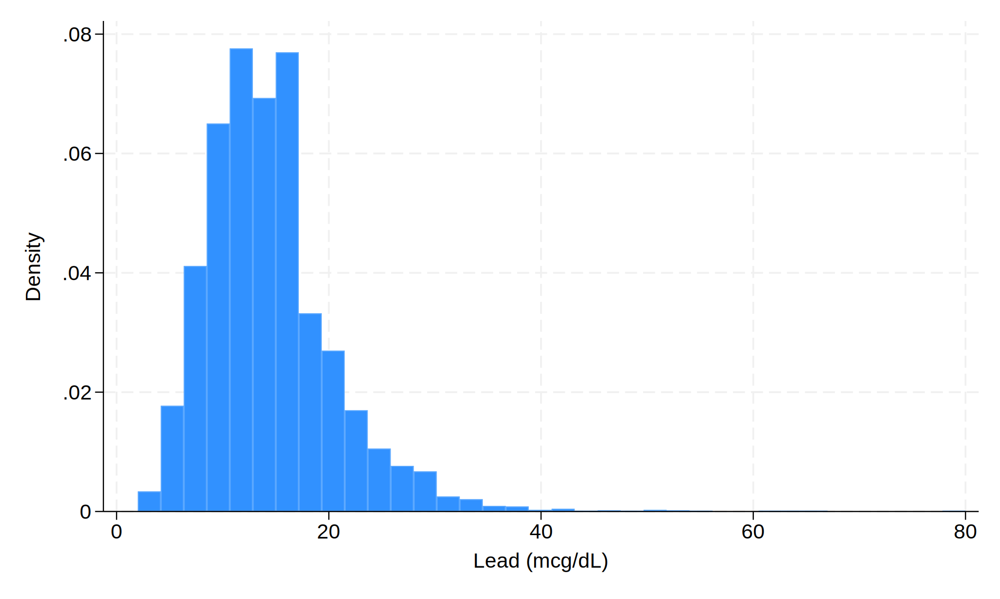
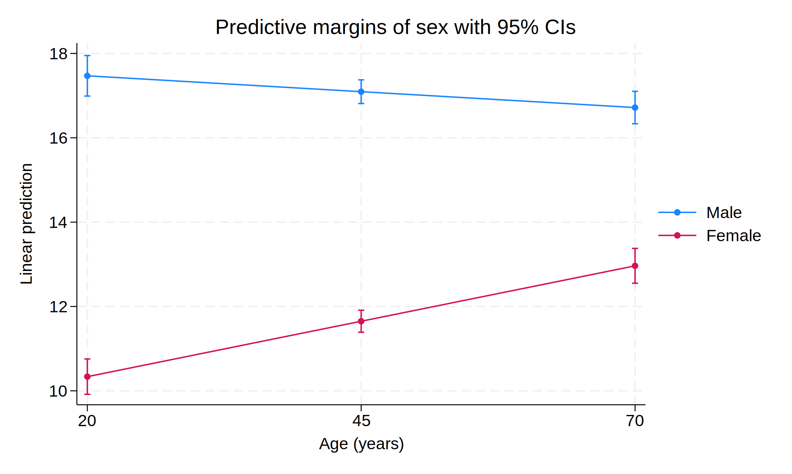
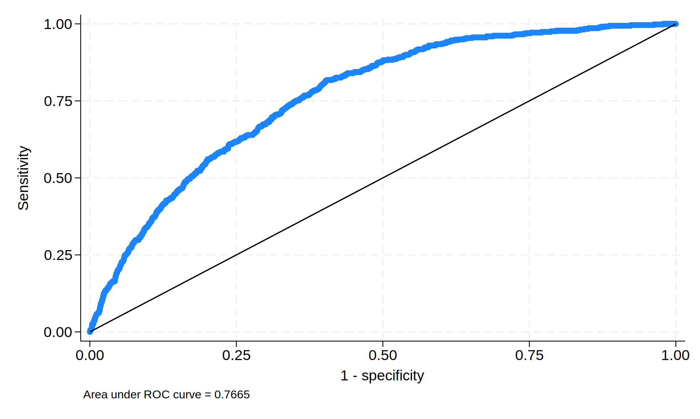

8 Exercise solutions
8.1 Exercise 1
. webuse nhanes2, clear. describe, short
Contains data from https://www.stata-press.com/data/r18/nhanes2.dta
Observations: 10,351
Variables: 58 20 Dec 2022 10:07
Sorted by: There are 10,351 observations of 59 variables. The full describe output is suppressed for space, but you should run it.
. tab race, mi
Race | Freq. Percent Cum.
------------+-----------------------------------
White | 9,065 87.58 87.58
Black | 1,086 10.49 98.07
Other | 200 1.93 100.00
------------+-----------------------------------
Total | 10,351 100.00No missing data.
. tab diabetes, mi
Diabetes |
status | Freq. Percent Cum.
-------------+-----------------------------------
Not diabetic | 9,850 95.16 95.16
Diabetic | 499 4.82 99.98
. | 2 0.02 100.00
-------------+-----------------------------------
Total | 10,351 100.00Two missing values.
lead is continuous, so a table isn’t the most effective.
. codebook lead
-------------------------------------------------------------------------------
lead Lead (mcg/dL)
-------------------------------------------------------------------------------
Type: Numeric (byte)
Range: [2,80] Units: 1
Unique values: 53 Missing .: 5,403/10,351
Mean: 14.3203
Std. dev.: 6.16647
Percentiles: 10% 25% 50% 75% 90%
8 10 13 17 22There’s a lot of missingness.
. pwcorr height weight bp*
| height weight bpsystol bpdiast
-------------+------------------------------------
height | 1.0000
weight | 0.4775 1.0000
bpsystol | -0.0364 0.2861 1.0000
bpdiast | 0.0675 0.3799 0.6831 1.0000 Blood pressure is highly correlated, more-so than height and weight. Weight is also correlated with both forms of BP. Height looks to be completely independent of boood pressure.
8.2 Exercise 2
. webuse nhanes2, clear
. twoway (scatter bpdiast bpsystol if sex == 1, mcolor(blue)) ///
> (scatter bpdiast bpsystol if sex == 2, mcolor(pink)) ///
> (lfit bpdiast bpsystol if sex == 1, lcolor(blue)) ///
> (lfit bpdiast bpsystol if sex == 2, lcolor(pink)), ///
> legend(label(1 "Men") label(2 "Women") order(1 2))
We can see the correlation between blood pressure measures, with a bit stronger of a relationship for men.
8.3 Exercise 3
. webuse nhanes2, clearThe sample size is massive, so the central limit theorem suffices.
. ttest height == 176 if sex == 1
One-sample t test
------------------------------------------------------------------------------
Variable | Obs Mean Std. err. Std. dev. [95% conf. interval]
---------+--------------------------------------------------------------------
height | 4,915 174.7421 .1026447 7.196115 174.5408 174.9433
------------------------------------------------------------------------------
mean = mean(height) t = -12.2553
H0: mean = 176 Degrees of freedom = 4914
Ha: mean < 176 Ha: mean != 176 Ha: mean > 176
Pr(T < t) = 0.0000 Pr(|T| > |t|) = 0.0000 Pr(T > t) = 1.0000The test rejects; the average height of men in the sample is lower than the national average.
. ttest age, by(sex)
Two-sample t test with equal variances
------------------------------------------------------------------------------
Group | Obs Mean Std. err. Std. dev. [95% conf. interval]
---------+--------------------------------------------------------------------
Male | 4,915 47.4238 .2448869 17.1683 46.94372 47.90389
Female | 5,436 47.72057 .2340613 17.25716 47.26171 48.17942
---------+--------------------------------------------------------------------
Combined | 10,351 47.57965 .1692044 17.21483 47.24798 47.91133
---------+--------------------------------------------------------------------
diff | -.2967619 .338842 -.9609578 .3674339
------------------------------------------------------------------------------
diff = mean(Male) - mean(Female) t = -0.8758
H0: diff = 0 Degrees of freedom = 10349
Ha: diff < 0 Ha: diff != 0 Ha: diff > 0
Pr(T < t) = 0.1906 Pr(|T| > |t|) = 0.3812 Pr(T > t) = 0.8094We fail to reject; there is no difference that the average age differs by gender.
. tab race diabetes
| Diabetes status
Race | Not diabe Diabetic | Total
-----------+----------------------+----------
White | 8,659 404 | 9,063
Black | 1,000 86 | 1,086
Other | 191 9 | 200
-----------+----------------------+----------
Total | 9,850 499 | 10,349 Given the different scales per race, it’s hard to draw a comparison. We can look at the rowwise percents. (If you ran tab diabetes race, you’d need the columnwise percents.)
. tab race diabetes, row chi2
+----------------+
| Key |
|----------------|
| frequency |
| row percentage |
+----------------+
| Diabetes status
Race | Not diabe Diabetic | Total
-----------+----------------------+----------
White | 8,659 404 | 9,063
| 95.54 4.46 | 100.00
-----------+----------------------+----------
Black | 1,000 86 | 1,086
| 92.08 7.92 | 100.00
-----------+----------------------+----------
Other | 191 9 | 200
| 95.50 4.50 | 100.00
-----------+----------------------+----------
Total | 9,850 499 | 10,349
| 95.18 4.82 | 100.00
Pearson chi2(2) = 25.3630 Pr = 0.000Nearly double the percent of blacks have diabetes and the \(^\chi^2^\) test confirms the difference is statistically significant.
8.4 Exercise 4
. webuse nhanes2, clear
. regress lead i.sex i.race c.age c.weight c.height i.region
Source | SS df MS Number of obs = 4,948
-------------+---------------------------------- F(9, 4938) = 129.98
Model | 36027.945 9 4003.105 Prob > F = 0.0000
Residual | 152083.33 4,938 30.7985682 R-squared = 0.1915
-------------+---------------------------------- Adj R-squared = 0.1901
Total | 188111.275 4,947 38.0253234 Root MSE = 5.5496
------------------------------------------------------------------------------
lead | Coefficient Std. err. t P>|t| [95% conf. interval]
-------------+----------------------------------------------------------------
sex |
Female | -5.26415 .2259894 -23.29 0.000 -5.70719 -4.82111
|
race |
Black | 2.937124 .2671182 11.00 0.000 2.413454 3.460794
Other | -.5521668 .5617011 -0.98 0.326 -1.653351 .549017
|
age | .0196081 .0048918 4.01 0.000 .0100181 .0291981
weight | -.0012435 .0059001 -0.21 0.833 -.0128103 .0103233
height | -.0275532 .0127149 -2.17 0.030 -.05248 -.0026264
|
region |
MW | -.1099025 .233614 -0.47 0.638 -.5678897 .3480848
S | -1.858491 .2346487 -7.92 0.000 -2.318507 -1.398476
W | -.2854048 .2380554 -1.20 0.231 -.7520992 .1812897
|
_cons | 21.16891 2.199034 9.63 0.000 16.85783 25.48
------------------------------------------------------------------------------The F-test rejects so the model is informative. The \(^R^2^\) is low, so there is a lot of variability we’re not capturing in this model.
. rvfplot
This doesn’t look great. We don’t see any signs of nonnormality, but we do see a lot of very large positive residuals. If you look at a histogram for lead,
. hist lead
(bin=36, start=2, width=2.1666667)
We see right skew. The maintainers of this data noticed the same concern, as they include a loglead variable in the data to attempt to address this.
. desc loglead
Variable Storage Display Value
name type format label Variable label
-------------------------------------------------------------------------------
loglead float %9.0g log(lead)Perhaps we should have run the model with loglead as the output instead.
. estat vif
Variable | VIF 1/VIF
-------------+----------------------
2.sex | 2.05 0.488262
race |
2 | 1.05 0.950220
3 | 1.06 0.941064
age | 1.13 0.885331
weight | 1.33 0.749151
height | 2.44 0.410091
region |
2 | 1.71 0.583352
3 | 1.77 0.566163
4 | 1.73 0.576881
-------------+----------------------
Mean VIF | 1.59Nothing of concern here. The only moderately high VIF’s are on sex and it’s interaction, which does not concern us (of course a main effect and interaction are collinear.).
The coffecient on “Female” is -5 and is statistically significant, so there is evidence that males have higher average lead levels.
The p-value is very small, so it is statistically significant. However, if we look at lead levels:
. summ lead
Variable | Obs Mean Std. dev. Min Max
-------------+---------------------------------------------------------
lead | 4,948 14.32033 6.166468 2 80We see that lead levels range from 2 to 80. The coefficient on age is about .02, so age would need to increase by about 50 years to see a higher value for the lead score. Unlikely to be clinically interesting! This is a side effect of the massive sample size.
. margins region
Predictive margins Number of obs = 4,948
Model VCE: OLS
Expression: Linear prediction, predict()
------------------------------------------------------------------------------
| Delta-method
| Margin std. err. t P>|t| [95% conf. interval]
-------------+----------------------------------------------------------------
region |
NE | 14.93498 .176734 84.51 0.000 14.5885 15.28145
MW | 14.82507 .1532375 96.75 0.000 14.52466 15.12549
S | 13.07649 .1525888 85.70 0.000 12.77734 13.37563
W | 14.64957 .1588465 92.22 0.000 14.33816 14.96098
------------------------------------------------------------------------------
. margins region, pwcompare(pv)
Pairwise comparisons of predictive margins Number of obs = 4,948
Model VCE: OLS
Expression: Linear prediction, predict()
-----------------------------------------------------
| Delta-method Unadjusted
| Contrast std. err. t P>|t|
-------------+---------------------------------------
region |
MW vs NE | -.1099025 .233614 -0.47 0.638
S vs NE | -1.858491 .2346487 -7.92 0.000
W vs NE | -.2854048 .2380554 -1.20 0.231
S vs MW | -1.748589 .2161764 -8.09 0.000
W vs MW | -.1755023 .2216647 -0.79 0.429
W vs S | 1.573087 .2227974 7.06 0.000
-----------------------------------------------------It looks like South is significantly lower levels of lead than the other regions, which show no difference between them.
. regress lead i.sex##c.age i.race c.weight c.height i.region
Source | SS df MS Number of obs = 4,948
-------------+---------------------------------- F(10, 4937) = 123.65
Model | 37676.3642 10 3767.63642 Prob > F = 0.0000
Residual | 150434.91 4,937 30.4709156 R-squared = 0.2003
-------------+---------------------------------- Adj R-squared = 0.1987
Total | 188111.275 4,947 38.0253234 Root MSE = 5.52
------------------------------------------------------------------------------
lead | Coefficient Std. err. t P>|t| [95% conf. interval]
-------------+----------------------------------------------------------------
sex |
Female | -8.485856 .4923314 -17.24 0.000 -9.451044 -7.520667
age | -.0150619 .0067745 -2.22 0.026 -.0283429 -.0017809
|
sex#c.age |
Female | .0676205 .0091936 7.36 0.000 .0495969 .0856441
|
race |
Black | 2.985719 .2657756 11.23 0.000 2.464681 3.506758
Other | -.5307013 .5587129 -0.95 0.342 -1.626027 .5646243
|
weight | -.0044452 .0058847 -0.76 0.450 -.0159819 .0070915
height | -.0266069 .0126477 -2.10 0.035 -.0514021 -.0018118
|
region |
MW | -.1417546 .2324084 -0.61 0.542 -.5973783 .3138691
S | -1.897967 .2334589 -8.13 0.000 -2.35565 -1.440284
W | -.2945939 .2367891 -1.24 0.214 -.7588057 .169618
|
_cons | 22.89998 2.199931 10.41 0.000 18.58714 27.21282
------------------------------------------------------------------------------
. margins sex, dydx(age)
Average marginal effects Number of obs = 4,948
Model VCE: OLS
Expression: Linear prediction, predict()
dy/dx wrt: age
------------------------------------------------------------------------------
| Delta-method
| dy/dx std. err. t P>|t| [95% conf. interval]
-------------+----------------------------------------------------------------
age |
sex |
Male | -.0150619 .0067745 -2.22 0.026 -.0283429 -.0017809
Female | .0525586 .006614 7.95 0.000 .0395923 .0655249
------------------------------------------------------------------------------
. quietly margins sex, at(age = (20 45 70))
. marginsplot
Variables that uniquely identify margins: age sex
We see significance in the interaction, so we looked at the margins. It looks like men show a slight decline in lead as age increases (again, rescaling, -.015/year becomes -1.5 over 100 years - not very interesting) while women show a much more significant increase as age increases (roughly 1 unit every 20 years). The marginal plot helps us to visualize this. For men, from age 20 to 70, the average lead decreases barely half a point. For women, we see nearly a 3 point average increase.
8.5 Exercise 5
. webuse nhanes2, clear
. logit diabetes i.sex i.race c.age weight height i.region
Iteration 0: Log likelihood = -1999.7591
Iteration 1: Log likelihood = -1819.9899
Iteration 2: Log likelihood = -1777.7462
Iteration 3: Log likelihood = -1776.9939
Iteration 4: Log likelihood = -1776.9935
Iteration 5: Log likelihood = -1776.9935
Logistic regression Number of obs = 10,349
LR chi2(9) = 445.53
Prob > chi2 = 0.0000
Log likelihood = -1776.9935 Pseudo R2 = 0.1114
------------------------------------------------------------------------------
diabetes | Coefficient Std. err. z P>|z| [95% conf. interval]
-------------+----------------------------------------------------------------
sex |
Female | .0934803 .137068 0.68 0.495 -.175168 .3621286
|
race |
Black | .5781259 .1326244 4.36 0.000 .3181869 .8380648
Other | .408093 .3623376 1.13 0.260 -.3020757 1.118262
|
age | .058799 .0039646 14.83 0.000 .0510286 .0665695
weight | .0268805 .0031111 8.64 0.000 .0207829 .0329782
height | -.0220928 .0076659 -2.88 0.004 -.0371175 -.007068
|
region |
MW | -.0265833 .1418506 -0.19 0.851 -.3046054 .2514388
S | .0998071 .1375642 0.73 0.468 -.1698138 .3694281
W | -.0984779 .1457444 -0.68 0.499 -.3841316 .1871758
|
_cons | -4.645124 1.3496 -3.44 0.001 -7.290292 -1.999956
------------------------------------------------------------------------------. estat gof
Goodness-of-fit test after logistic model
Variable: diabetes
Number of observations = 10,349
Number of covariate patterns = 10,349
Pearson chi2(10339) = 10025.54
Prob > chi2 = 0.9860
. estat gof, group(20)
note: obs collapsed on 20 quantiles of estimated probabilities.
Goodness-of-fit test after logistic model
Variable: diabetes
Number of observations = 10,349
Number of groups = 20
Hosmer–Lemeshow chi2(18) = 15.92
Prob > chi2 = 0.5983
. lroc
Logistic model for diabetes
Number of observations = 10349
Area under ROC curve = 0.7665
We cannot reject the model fit (even once we switch to the proper Hosmer-Lemeshow test, which used 20 instead of 10 because we have 10 predictors). The ROC and AUC look decent but not great.
. margins race, pwcompare(pv)
Pairwise comparisons of predictive margins Number of obs = 10,349
Model VCE: OIM
Expression: Pr(diabetes), predict()
--------------------------------------------------------
| Delta-method Unadjusted
| Contrast std. err. z P>|z|
----------------+---------------------------------------
race |
Black vs White | .0301076 .0081584 3.69 0.000
Other vs White | .0197925 .0204751 0.97 0.334
Other vs Black | -.0103152 .0220354 -0.47 0.640
--------------------------------------------------------
. margins region, pwcompare(pv)
Pairwise comparisons of predictive margins Number of obs = 10,349
Model VCE: OIM
Expression: Pr(diabetes), predict()
-----------------------------------------------------
| Delta-method Unadjusted
| Contrast std. err. z P>|z|
-------------+---------------------------------------
region |
MW vs NE | -.0011484 .0061371 -0.19 0.852
S vs NE | .0045414 .0062131 0.73 0.465
W vs NE | -.0041309 .0061392 -0.67 0.501
S vs MW | .0056899 .0056911 1.00 0.317
W vs MW | -.0029825 .0056876 -0.52 0.600
W vs S | -.0086724 .0057535 -1.51 0.132
-----------------------------------------------------Blacks are more likely to have diabetes than whites or others. Age and weight are positive predictors whereas height is a negative predictor for some reason. There is no effect of gender or region.
8.6 Exercise 6
. webuse chicken, clear
. melogit complain grade i.race i.gender tenure age income ///
> nworkers i.genderm || restaurant:
Fitting fixed-effects model:
Iteration 0: Log likelihood = -1341.7541
Iteration 1: Log likelihood = -1337.7735
Iteration 2: Log likelihood = -1337.7659
Iteration 3: Log likelihood = -1337.7659
Refining starting values:
Grid node 0: Log likelihood = -1331.542
Fitting full model:
Iteration 0: Log likelihood = -1331.542
Iteration 1: Log likelihood = -1323.2469
Iteration 2: Log likelihood = -1321.7555
Iteration 3: Log likelihood = -1321.7325
Iteration 4: Log likelihood = -1321.7325
Mixed-effects logistic regression Number of obs = 2,763
Group variable: restaurant Number of groups = 500
Obs per group:
min = 3
avg = 5.5
max = 8
Integration method: mvaghermite Integration pts. = 7
Wald chi2(9) = 117.56
Log likelihood = -1321.7325 Prob > chi2 = 0.0000
------------------------------------------------------------------------------
complain | Coefficient Std. err. z P>|z| [95% conf. interval]
-------------+----------------------------------------------------------------
grade | .0616416 .0463355 1.33 0.183 -.0291742 .1524574
|
race |
2 | .5512152 .140432 3.93 0.000 .2759736 .8264568
3 | 1.180759 .137298 8.60 0.000 .9116599 1.449858
|
1.gender | .5866638 .1059402 5.54 0.000 .3790247 .7943029
tenure | -.0699963 .1727861 -0.41 0.685 -.4086509 .2686582
age | -.0748883 .0230589 -3.25 0.001 -.1200828 -.0296938
income | -.0034531 .0016933 -2.04 0.041 -.006772 -.0001343
nworkers | -.0303442 .0391781 -0.77 0.439 -.1071318 .0464435
1.genderm | .0795912 .1245047 0.64 0.523 -.1644336 .3236159
_cons | .3910687 1.103955 0.35 0.723 -1.772644 2.554781
-------------+----------------------------------------------------------------
restaurant |
var(_cons)| .5755458 .1417722 .3551455 .9327247
------------------------------------------------------------------------------
LR test vs. logistic model: chibar2(01) = 32.07 Prob >= chibar2 = 0.0000We can’t look at fit statistics, but the \(^\chi^2^\) is significant, so we’re doing better than chance.
. margins race, pwcompare(pv)
Pairwise comparisons of predictive margins Number of obs = 2,763
Model VCE: OIM
Expression: Marginal predicted mean, predict()
-----------------------------------------------------
| Delta-method Unadjusted
| Contrast std. err. z P>|z|
-------------+---------------------------------------
race |
2 vs 1 | .0665377 .0166607 3.99 0.000
3 vs 1 | .1685295 .0185599 9.08 0.000
3 vs 2 | .1019918 .019303 5.28 0.000
-----------------------------------------------------Unfortunately, this data is poorly labeled so we can’t talk in specifics about things, but generally
- Race 1, 2 and 3 have increasing odds of a complaint.
- Gender 1 has significantly higher odds than gender 2.
- Age and income are negatively related to the odds of a complaint (older, more well paid employees are less likely to have complaints).
- Neither restaurant level characteristic is significant once server characteristics are accounted for.
The estimated random variance is non-zero, so yes, the random effects for restaurants are warranted.